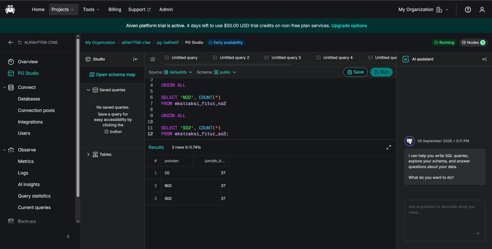

5. Pipeline Cloud & KNIME#
Tahap Pipeline Cloud & KNIME menjelaskan alur integrasi antara hasil ekstraksi fitur, penyimpanan data pada cloud database, dan proses analisis menggunakan KNIME Analytics Platform.
Pada penelitian ini, proses ekstraksi menghasilkan 68 fitur time series untuk masing-masing polutan CO, NO₂, dan SO₂. Hasil ekstraksi tersebut kemudian disimpan pada PostgreSQL di Aiven Cloud sehingga data dapat diakses dari KNIME untuk proses analisis berikutnya.
Penggunaan Aiven dan KNIME merupakan bagian dari workflow yang digunakan dalam pengerjaan proyek. Aiven digunakan sebagai media penyimpanan data hasil ekstraksi fitur, sedangkan KNIME digunakan untuk membangun workflow analisis secara visual.
5.1. 1. Alur Pipeline Data#
Pipeline yang digunakan terdiri dari beberapa tahapan yang saling terhubung:
Data time series CO, NO₂, dan SO₂ yang telah melalui proses data cleaning digunakan sebagai input ekstraksi fitur.
Dilakukan ekstraksi 68 fitur time series pada masing-masing polutan menggunakan TSFEL.
Hasil ekstraksi fitur disimpan dalam tiga dataset, yaitu dataset fitur CO, NO₂, dan SO₂.
Dataset hasil ekstraksi diunggah ke PostgreSQL Aiven menggunakan kode Python dari Google Colab.
Data yang telah tersimpan pada Aiven kemudian diakses melalui KNIME Analytics Platform.
Pada KNIME, data setiap polutan diproses melalui tahapan pemilihan kolom fitur, normalisasi, reduksi dimensi PCA, K-Means Clustering, evaluasi Silhouette Coefficient, dan visualisasi hasil cluster.
Secara sederhana, alur pipeline yang digunakan dapat digambarkan sebagai berikut:
Time Series Clean → Ekstraksi 68 Fitur TSFEL → PostgreSQL Aiven → KNIME → Normalisasi → PCA → K-Means → Silhouette Coefficient → Visualisasi Cluster
Pipeline tersebut diterapkan pada ketiga dataset polutan, yaitu CO, NO₂, dan SO₂.
5.2. 2. Upload Hasil Ekstraksi Fitur ke PostgreSQL Aiven#
Setelah proses ekstraksi fitur selesai, dataset hasil ekstraksi CO, NO₂, dan SO₂ diunggah ke PostgreSQL Aiven menggunakan Python dari Google Colab.
Setiap dataset terdiri dari 37 baris data mahasiswa dengan 71 kolom utama, yaitu:
idnamadaerah68 kolom hasil ekstraksi fitur time series
Sebelum proses upload, kolom bantu seperti nama_key, daerah_key, dan key dihapus sehingga hanya identitas utama dan 68 fitur yang disimpan ke database.
5.2.1. 2.1 Membuat Koneksi PostgreSQL Aiven#
Koneksi dari Python ke PostgreSQL dibuat menggunakan SQLAlchemy dan driver psycopg2.
from sqlalchemy import create_engine
from urllib.parse import quote_plus
password = quote_plus("PASSWORD_AIVEN")
engine = create_engine(
"postgresql+psycopg2://avnadmin:"
f"{password}@HOST_AIVEN:PORT_AIVEN/defaultdb"
"?sslmode=require"
)
Informasi sensitif seperti password database tidak ditampilkan pada dokumentasi publik.
5.2.2. 2.2 Upload Dataset Fitur CO#
co_upload = co.drop(
columns=["nama_key", "daerah_key", "key"],
errors="ignore"
)
co_upload.to_sql(
"ekstraksi_fitur_co",
engine,
if_exists="append",
index=False
)
print("Berhasil upload:", len(co_upload), "baris CO")
Output:
Berhasil upload: 37 baris CO
Data CO disimpan pada tabel:
ekstraksi_fitur_co
5.2.3. 2.3 Upload Dataset Fitur NO₂#
no2_upload = no2.drop(
columns=["nama_key", "daerah_key", "key"],
errors="ignore"
)
no2_upload.to_sql(
"ekstraksi_fitur_no2",
engine,
if_exists="replace",
index=False
)
print("Berhasil upload:", len(no2_upload), "baris NO2")
Output:
Berhasil upload: 37 baris NO2
Data NO₂ disimpan pada tabel:
ekstraksi_fitur_no2
5.2.4. 2.4 Upload Dataset Fitur SO₂#
so2_upload = so2.drop(
columns=["nama_key", "daerah_key", "key"],
errors="ignore"
)
so2_upload.to_sql(
"ekstraksi_fitur_so2",
engine,
if_exists="replace",
index=False
)
print("Berhasil upload:", len(so2_upload), "baris SO2")
Output:
Berhasil upload: 37 baris SO2
Data SO₂ disimpan pada tabel:
ekstraksi_fitur_so2
Dengan demikian, hasil ekstraksi fitur dari ketiga polutan telah tersimpan pada PostgreSQL Aiven dan dapat digunakan sebagai sumber data pada workflow KNIME.
5.3. 3. Verifikasi Data pada PostgreSQL Aiven#
Setelah proses upload selesai, data diverifikasi melalui PG Studio pada Aiven untuk memastikan bahwa ketiga tabel telah tersimpan pada database PostgreSQL.
Verifikasi dilakukan dengan menghitung jumlah baris pada masing-masing tabel menggunakan query SQL.
SELECT 'CO' AS polutan, COUNT(*)
FROM ekstraksi_fitur_co
UNION ALL
SELECT 'NO2', COUNT(*)
FROM ekstraksi_fitur_no2
UNION ALL
SELECT 'SO2', COUNT(*)
FROM ekstraksi_fitur_so2;
5.3.1. 3.1 Hasil Verifikasi#
Hasil query menunjukkan bahwa masing-masing tabel memiliki 37 baris data.
Tabel |
Polutan |
Jumlah Baris |
|---|---|---|
|
CO |
37 |
|
NO₂ |
37 |
|
SO₂ |
37 |
Hasil verifikasi pada PG Studio ditunjukkan pada gambar berikut.
{kind=link}

Fig. 5.1 Verifikasi jumlah data hasil ekstraksi fitur CO, NO₂, dan SO₂ pada PostgreSQL Aiven.#
Hasil tersebut menunjukkan bahwa data hasil ekstraksi fitur untuk ketiga polutan telah tersedia pada PostgreSQL Aiven dan selanjutnya dapat diakses melalui KNIME untuk proses analisis.